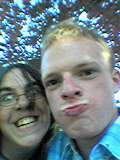
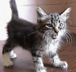

|
|
|
|
|
Friends, Romans, Countrymen. A lovely collection of pucker people to show off to your wonderful eyes - pictures included! <^^> Jothy - The Oldest One <^^> No.
I don't mean age wise. I mean he's the mate I have known for most of
my life. I can't remember the exact time when we met, but I do know
that when we did, we were very young. Jon has an incredible sense of
imagination and hardly ever stops himself from doing out-of-the-ordinary
things. My memories of Jon, (theOwly1, Jothy) start when we were back
in primary school. He invented the game "Running
Coca~Cola" which involved an assault course of running around
the playground (well back then the playground was a big place :P). I loved going over his house after school. The house itself is amazingly big now, but when I was that small, it was gi-mungous - if that's even a word. He had a tree-house, a play room, a field outside the house, and an AMIGA - which we spent many hours on playing very cool games. Nowadays, Jon's bachelor pad has been home to many a sleepover, and partys ending in all of us getting drunk and having to spend the night. There's also a mature "Gentleman's Club" which meet a couple of times a week to partake in sessions of the gaming variety. If you want to visit his web sites - click here (WARNING - FRAMES ARE NEEDED!) <T:DM> Tom - The Great One <T:DM> Tom's cool, (gotta say this or he'll pull my site off his server hehe). Tom and I first met at one of Jon's birthday party's - his sixth one so I recall - the scary one - with ghosts on the curtains and candles 'nstuff, remember Jon? Ahh... memories. I was so shocked back then to realise that Tom's dad was a presenter on a show called "Words and Pictures" and on "Playdays"! How cool is that? We lost contact with each other until West Mon, where we were stuck in the same class (7S - the best) and we instantly became best of friends. We formed a kind of trio with Dave. We liked the same things back then (both sciency boffins *mwha* and computers!). I remember spending most of my time with him, frequently
going to sleep over his house on the weekends, and he had the things
I wanted badly - a computer! Windows 95!!!!
and even better than Most of the exams and test we ever had in school were so competitive when we were in school, but we always usually equalled out some way or another. I think that's why I connected with Tom so well, we had like minds. We would often put up the other side to an arguement, even if we didn't believe in it, just to make a discussion! Tom's got a grrrrrlfriend now and I don't get to see much of him :S but I still TALK to him loads! :D Take a look at my hosts web site now. NOW I TELL YOU. I'm not saying it again! (WARNING: FRAMES ARE NEEDED) <-_-> David Bitch - The Beechy One <-_-> I
knew Dave in Greenlawn but never really talked to him much. After starting
at West Mon I met up with him as he was also in 7S
and I recognised his face :D. I then came to realise I'd made a good
choice for a friend because he was incredibly funny! And what an artist!
He still amazes me even now! We also have the same interests - especially
on the comedic point of view, Monty Python and all.... Dave and I have stayed loyal friends for years and its likely to stay that way for years to come. I can remember us going on whole-day bike rides, taking lunch and going all the way around Llandegfedd Resovoir. Even now we still meet up just to talk 'nstuff. Dave's coming to St. Albans next year! WooHoo! Can't wait to see his new web site. Ha. Fooled ya. You thought it was a link dincha! <"\/"> Ben - The Critic One <"\/"> Bethy. Gotta love him. Everyone does. His crude yet aggressive
sense of humour should not be looked at pesimistically Since Christmas Ben has really started to become part of the new "Cool Crew". (Cue Groinal Thrutage) HaHa! See Ben - made you look! Sorry all you other people, but that was an ongoing joke with Ben. The newest one is where you hold out your hand for someone to shake it and as soon as they go for your hand, you sharply replace it with your groine. See what I mean about crude? 'av it. Persistantly admitting his non-bias opinion to gaming, "he don care 'bout wots insides da box, wots ON DA BOX dat countz". And that's why I think his opinion really counts - after all, he is the only one out of us to own all three "Next-Gen" consoles. Click Here for Ben's web site........ wait a min.... what AM I saying? Ben hasn't got a web site - he can't work a compy for crying out loud! :S Lol. [="-"=] Lewis and Dan - The Metal PhR34ks [="-"=] Want music? Dan and Lew can provide. Being best friends themselves for years now, they know what each other would do or say... and they are huge metal music fans! Dan plays percussion and Lew plays guitar - and they are both sh!t hot! Lew is great! Top marks to him for his Star Wars impersonations! (Chewbaccar - great job Lew!) He supplies me with the latest and greatest metal music, such as "Dreamtheater" (lush band). If you were to meet Lew and Beechy at the same time you would swear they were twins. They have almost exactly the same sense of humour. They make me laugh anyway. Dan likes Kamelot. They are hell of a cheesey - but that's why we like them, ain't that right Dan?! Come to think of it, Dan does a pretty good voice act as well! He's also an artist - probably what makes him so cool, those artists you see, always have got a \/\/3!R|) imagination :D Lew's the one on the left for you people looking at the pic - and that's me the other side. Sorry I ain't got better pics of the guys. I ain't got one at all for Dan. [=^-^=] K@ - The Cute One :P [=^-^=] She's the coolest girl I know. She could be known as "one-of-the-lads" but she's too feminine for that. This is how cool she is - she BOUGHT an XBox because she enjoyed kicking ass on Halo so much! She's also a mean oponent on DOA and Burnout 2 (BIG SURF!!!) To me she is my HTML inspiration, as you can tell from her web site, I like her style. She 0wnz da Net (is that right - :S). Her music tastes are very happy, and she loves everything Japanesey.... even hentai ;). K@ grrrl all the way..... he he. Now I know the picture isnt Kat, but she thinks Cameras Steal Your Soul - so I don't know if anyone has a picture of her? Still, here's the next best thing - a really cute cat :D
|
|
|
|
||

 that
- the internet! I remember the days. (Pancakes on Sundays)
that
- the internet! I remember the days. (Pancakes on Sundays) although he's managed to make me laugh more times than I've made him
("Get Out"!).
although he's managed to make me laugh more times than I've made him
("Get Out"!). because
it's so funny. Many times he's had me cracking up on the floor laughing!
because
it's so funny. Many times he's had me cracking up on the floor laughing!